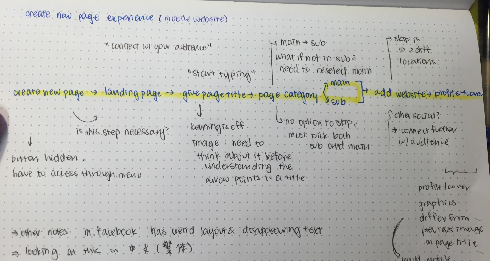
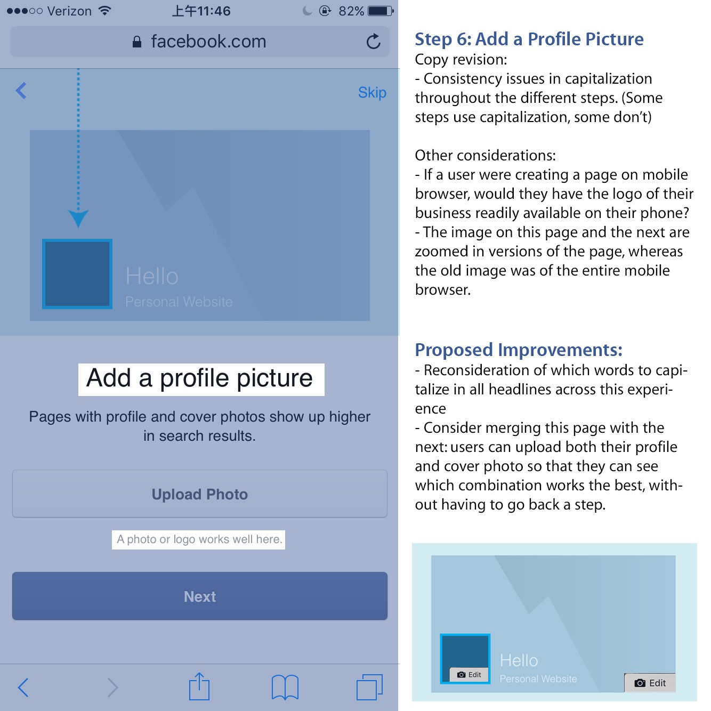
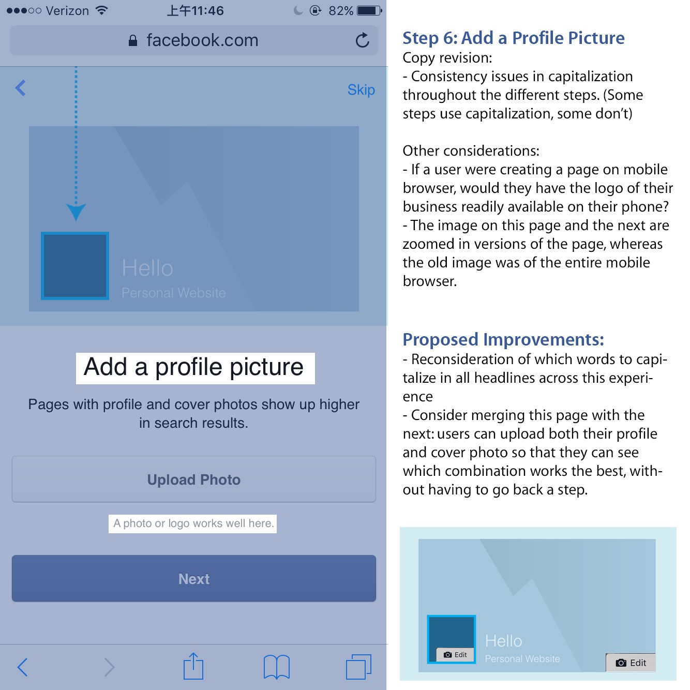

Facebook Content Strategy Candidate Exercise

Part 1 of 2: Identifying Opportunities
The Challenge
Describe an opportunity within the Facebook platform / Facebook mobile app for a content overhaul.
Identifying Pain Points
Facebook is a massive platform which has grown into a gigantic content aggregation system. With most of the content being user generated, I decided to focus on how better to organize the content created by users– specifically within groups.
As a student, I found the number of groups I’m in quickly escalating as my college career progressed. I’m now part of hundreds of groups, and I probably actively participate in less than 10 of them. With all this noise, sifting through information to find the important content has become increasingly difficult. A notable step Facebook has taken recently is the Buy/Sell functions in Free & For Sale Groups, but I believe there is plenty of opportunity left for content overhaul in different types of Facebook Groups.
The Process
I started off this project by looking at what netizens had to say about the organization of content in Facebook group. I think a response by Megan Chen on Quora did a good job of capturing the four main group types that exist in the student world on Facebook:
I use groups for a lot of different reasons, including but not limited to–Megan Chen on Quora
- Class groups: sharing files/pictures of notes, homework help, discussion
- Clubs/Student Orgs: Events, schedules of said events, easy way to get info out to all people in club
- Forums: Lots of intellectual discussion going on, lots of users, lots of threads and lots of information.
- Marketplaces (Buy/Sell)
To improve the experience within a group (specifically clubs), I’d like to propose a different way of organization for user content:*in this specific example I am focusing on the mobile experience*

As demonstrated above, I do believe that it would be beneficial to have three major changes to a Facebook Group that is dedicated to a club:
- Option to Create an Event (next to post)
- Quick toggle to View Events
- Quick toggle to View Reminders
Additional Info
It is important to note that this content overhaul was solely based on my opinions alone– however, a more thorough research process is important to deciding what the best content strategy is for groups. Studying how people (and not just college students) use groups would help Facebook gain insight as to how to better structure the content generated everyday, and make it easier for users to accomplish what they set out to do. Usability testing (A/B) for placement of buttons and text preferences should also be put into place to make sure that this is the best user experience possible.
The three features mentioned above would probably be the most commonly used for groups dedicated to student organizations. This would directly impact the organizing of content on the Facebook Platform.
Other content overhauls I considered included the display of groups (reference the rightmost iPhone in the cover photo at the top of the page), the organization of the left column navigation bar on the desktop version of Facebook, and the visibility of the Help links on Facebook.com
Part 2 of 2: Re-envisioning Content
The challenge:
Improve the page creation experience on a mobile browser. This was an interesting challenge, as Facebook offers a multitude of options for creating a page: either through desktop, the Facebook Pages Manager App, through the Facebook Mobile App, and also through mobile browser.
The process:
I began by evaluating the user flow of the creation of a page, and identifying why a user would choose to use the mobile browser experience rather than a full fledged desktop page creation experience. I presume that mobile users seek a simplified, easy way to quickly get the page up and running, and are more interested in making content available rather than fine tuning details, for which a computer experience would make more sense. In the interest of time and relevance to the challenge at hand, I chose to only evaluate the Pages Manager app user flow against the mobile browser version. Here are the user flow and language comparisons, respectively:
Mobile Browser
Facebook Pages Manager App

After evaluating the differences in vital features that each process goes through, some questions arose. Since I was aiming at improving the mobile browser experience, I focused on the content and the user flow that could be revised within this specific experience.
- Is there a better way to navigate to the creation page?
- Is the landing page with the message “connect with your audience on Facebook | pages are for businesses, brands and organizations, and they’re free to set up | get started | agree to Facebook Pages Terms” necessary?
- Why does title/ category fall on separate pages?
- Is there a need to upload a picture within your mobile browser?Will users have pictures of their logo on their phone if they are starting a page on a mobile device, or is this better suited for a desktop?
- Why have six steps to go through on the mobile browser experience and no progress bar, whereas the pages app has two explicit steps?
- Why is the “skip” not placed closer to the “next” button, instead in not-bold font at the right upper corner of the screen?
My Thoughts
After evaluating these questions and the experience in the Pages app, I came to the conclusions below in the images. The revisions are a mix of UI and copy. I’d like to note that I do not believe a landing page is necessary (step 2)– unless for legal reasons in which the user must consent to Facebook’s policy.
I’d also like to point out that this process could be condensed into a cleaner process (as demonstrated in the app version Facebook built) while still grabbing the needed content from the Page manager to establish the basics of a page. The essentials include: page title, page category, possibly a profile image, and an optional website link. The rest of the content could be added after the user is taken to the Page they successfully created.
Another main revision would be the option for users to “skip”, where the skip button can be placed in a gray/white button below the next button, rather than on the upper right corner, since anything out of range for the thumb (especially on larger phones) is typically harder to access for users.


 
